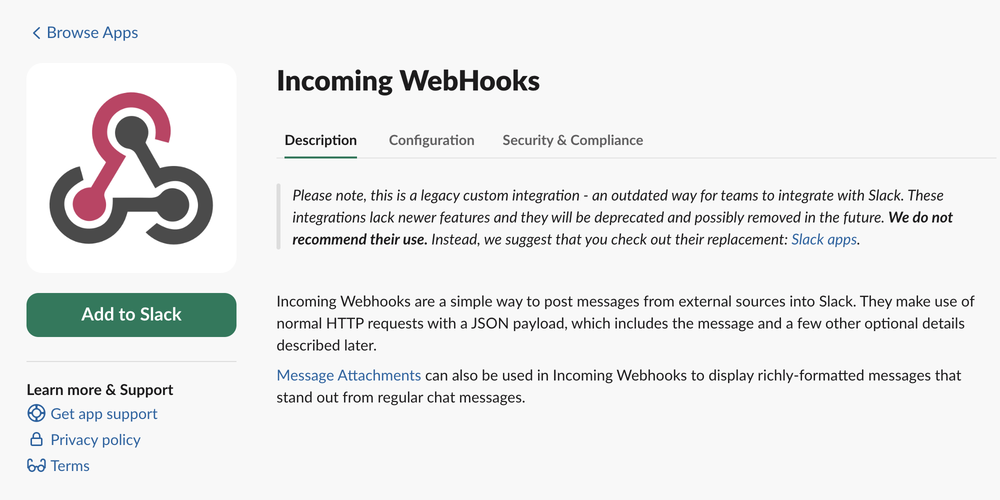
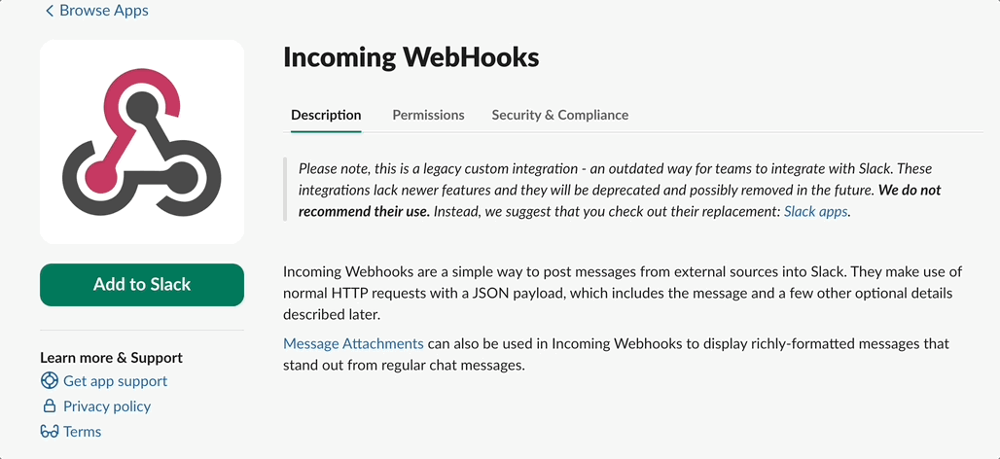
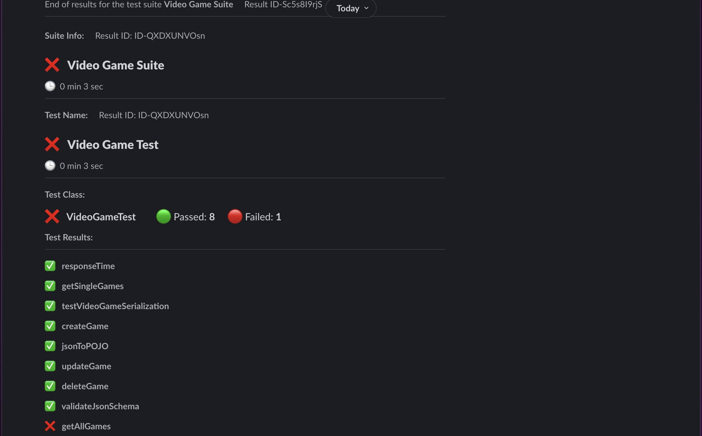

In the fast-paced world of software development, observing your test results in real time and staying informed as a team is crucial. To keep track of the status of your tests, you can send test results to Slack using webhooks.
What is a webhook?
A webhook is a mechanism that allows you to send data from one application to another. In the context of test results, a webhook can be used to send test results from your test automation framework to Slack.
Slack Apps
Slack Apps are custom integrations that extend Slack's functionality. They can be built to perform specific tasks, automate workflows, or integrate external services with your Slack workspace. These apps can be either custom-built for your organization's needs or installed from the Slack App Directory.
First we need to add our Slack workspace called "Incoming Webhooks".This app allows you to send messages from external sources to your Slack workspace, and you can set which channel you want to send the messages to.

Adding dependencies to our code
First we need to add our dependencies to our code.This solution working only TestNG v7 and above.
If you are using Maven
<dependency>
<groupId>io.github.automationreddy</groupId>
<artifactId>java-slack-notify</artifactId>
<version>1.2.0</version>
</dependency>
If you are using Gradle
implementation group: 'io.github.automationreddy', name: 'java-slack-notify', version: '1.2.0'
Then we need to add the following code to our test class.
@Listeners(TestNGSlackReporter.class)
public class TestClass {
//ToDo
}
Lately we need to add the following code to related testng.xml file.
<?xml version="1.0" encoding="UTF-8"?>
<!DOCTYPE suite SYSTEM "http://testng.org/testng-1.0.dtd">
<suite name="Regression">
<listeners>
<listener class-name="io.github.automationreddy.testng.TestNGSlackReporter"/>
</listeners>
</suite>
Creating the webhook URL and configuring settings Now, we need to create a webhook URL and make our settings.
From Slack, click on the "Incoming Webhooks" app.
On the left panel, click the "Add to Slack" button.
On the opening page, select a channel. Slack will generate a URL for you. Copy that URL and paste it into your slack.properties file.

Properties
Inside src/main/resources folder create a file named as slack.properties.
Add variables as below.Second and third variables are optional.
WEBHOOK_URL=paste_your_webhook_url_here
NOTIFY_ONLY_ON_FAILURE=false
SHOW_FAILED_RESULTS_ONLY=false
Results
If everything is configured correctly, you will see your test results in the Slack channel.
